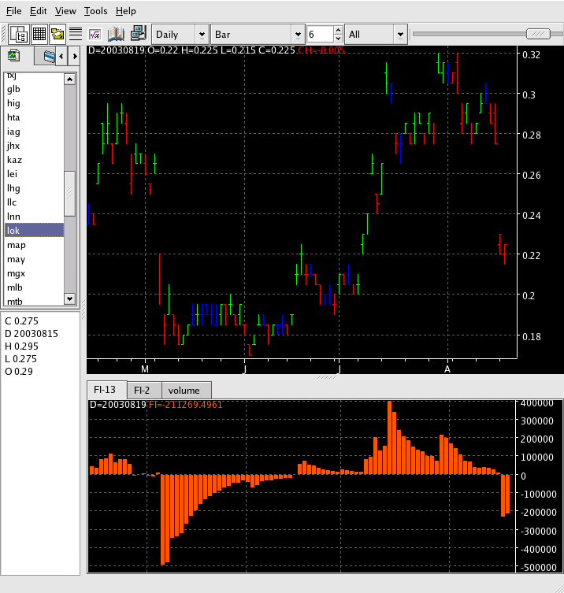

Force Index - FI

Description
Force Index = Volume Today * (Close Today - Close Yesterday)
Use two separate FI indicators: a very short-term EMA (2-days)
and a short-term EMA (13-days).
Parameters
- Color - Color of the plot
- Label - The text to identify the FI plot
- Line Type - The line type for this indicator
- Smoothing - The period to use for the smoothing MA
- Smoothing Type - The type of MA to use for smoothing
Acknowledgements
Alexander Elder, "Trading for a Living" ISBN: 0471592242, 0471592250